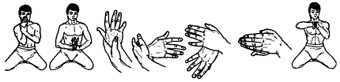

Сорвите плод с дерева

Исходное положение: Cтоим на коленях, ягодицами касаемся пяток, подъемами стоп касаемся пола. Корпус держим прямо. Руки согнуты в локтях. Правое предплечье вертикально, раскрытая ладонь обращена к лицу. Левая ладонь снаружи обхватывает правое запястье, большой палец надавливает на костяшку правого мизинца.
На выдохе, сгибая правую руку в лучезапястном суставе и разворачивая кисть вокруг вертикальной оси вправо, опускаем руки и прижимаем их к животу чуть ниже пупка. На вдохе поднимаем руки на уровень головы, распрямляя кисть в исходное положение.
Повторяем 4 раза.
Разворачивая внутрь правую кисть под левой, накладываем левую ладонь на тыльную сторону правой кисти. Пальцы рук направлены вперед. Правое плечо и предплечье горизонтальны. На выдохе притягиваем кисти рук к груди и к правому плечу. Затем, не отрывая кистей друг от друга, меняем положение рук и повторяем упражнение, притягивая кисти к животу, груди и левому плечу.
Next up: Журавль расправляет крылья